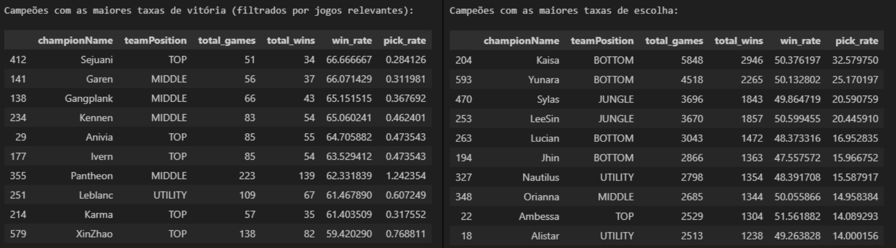

Assistente Analítico de Balanceamento (League of Legends)
Projeto de Conclusão de Curso (MBA) - Ibmec BH
1. O Desafio de Negócio
O setor de jogos como serviço (GaaS) depende diretamente da retenção e do engajamento dos jogadores para manter sua lucratividade. Em ecossistemas competitivos como League of Legends, um meta desequilibrado torna as partidas previsíveis. Isso resulta em queda de interesse, o que afeta diretamente a receita da empresa (como a venda de itens cosméticos e skins) e cria riscos para a reputação da marca. O objetivo deste projeto foi construir uma ferramenta preditiva que atue como um assistente para os desenvolvedores, permitindo decisões baseadas em dados em vez de intuição.

2. Engenharia de Dados e Preparação
Os dados foram coletados através da Riot API, extraindo o histórico completo de partidas de jogadores das patentes Desafiante, Grão-Mestre e Mestre do servidor coreano (KR), garantindo um recorte onde o meta competitivo é executado no mais alto nível.
A fase de preparação foi extensa: os dados JSON aninhados foram "achatados" em DataFrames estruturados. Utilize a API Data Dragon para converter os IDs numéricos de itens em nomes compreensíveis. Além disso, criei uma feature crucial chamada "game_phase", categorizando o momento da partida (Early, Mid, Late Game) para permitir análises dinâmicas ao longo do tempo.

3. Modelagem de Machine Learning e Sinergias
O coração do sistema é um modelo Random Forest treinado para prever a vitória ou derrota com precisão de 0.87. O grande diferencial do modelo foi a engenharia de features baseada no contexto do design do jogo. Em vez de avaliar apenas o campeão isolado, o modelo avaliou a sinergia entre o Campeão e a Runa-chave (ex: Lee Sin + Conquistador), além de mapear a presença de cada item como variáveis binárias de impacto.
4. Insights de Design Gerados
A análise de "Feature Importance" do modelo quebrou alguns paradigmas básicos de balanceamento:
- A Supremacia da Itemização: O modelo provou matematicamente que itens como Ionian Boots of Lucidity e Plated Steelcaps possuem mais peso para determinar o vencedor de uma partida do que o próprio kit base do campeão escolhido.
- Foco em Sistemas, não apenas em Heróis: A alta importância das sinergias demonstrou aos designers que o balanceamento focado apenas em "nerfar" um campeão é ineficiente; a raiz da toxidade competitiva geralmente reside na interação desse campeão com sistemas externos, como as runas.